这是一篇来自中山大学的区块链相关的论文阅读分享，论文名为 Definition and Detection of Defects in NFT Smart Contracts。
概要
近年来，非同质化代币 (NFT) 的诞生备受关注。NFT 能够代表用户在区块链上的所有权，并因其受欢迎程度而经历了巨大的市场销量。然而，NFT 的高价值也使其成为攻击者的目标。攻击者可以利用 NFT 智能合约中的缺陷来损害 NFT 生态系统的安全性和可靠性。尽管这个问题意义重大，但目前缺乏针对 NFT 智能合约的系统性分析工作，这可能会引发人们对用户 NFT 安全性的担忧。为了弥补这一缺陷，本文介绍了 NFT 智能合约中的五个缺陷。每个缺陷都进行了定义，并通过代码示例说明了其特征和后果，并提供了可能的修复方案。此外，我们还提出了一个名为 NFTGuard 的工具，用于基于符号执行框架检测我们定义的缺陷。具体来说，NFTGuard 从合约抽象语法树 (AST) 中提取状态变量的信息，这对于识别符号执行期间的变量加载和存储操作至关重要。此外，NFTGuard 从字节码中恢复源代码级特征，从而有效地定位缺陷并根据预定义的检测模式进行报告。作者在 16,527 个实际智能合约上运行 NFTGuard，并根据手动标记的结果进行评估。发现 1,331 个合约至少包含 5 个缺陷中的一个，工具总体准确率为 92.6%。
背景
Solidity智能合约和EVM
智能合约是“执行合约条款的计算机化交易协议”。Solidity 是以太坊上最流行的智能合约编程语言。在将合约部署到以太坊时，源代码将被编译为 EVM 字节码并永久存储在区块链上。由于智能合约的不可篡改性，所有已部署的合约即使检测到错误也无法修改。
EVM 对于在以太坊上部署智能合约的运行至关重要。它通过将合约 EVM 字节码拆分为操作码 (opcode) 并执行其指令来执行交易。然而，EVM 字节码的跳转位置无法静态确定，并且函数调用没有返回指令。智能合约中的数据可以存储在存储、内存或调用数据中。存储用于存储永久数据，而内存用于在合约执行期间临时使用。智能合约中每个可变状态变量在编译期间都会被分配一个 slot ID，指示其存储空间。这些 slot ID 有助于在执行期间识别状态变量的确切存储位置。对于映射和动态数组等复杂数据类型，定位存储区域需要结合 slot ID 进行哈希计算。
ERC-721 标准
ERC-721 标准由 EIP 定义，允许在智能合约中追踪 NFT。代币是以太坊区块链上的数字资产，可以是可替代的，也可以是不可替代的。ERC-20 标准适用于可替代、相同和可互换的代币。
相比之下，符合 ERC-721 标准的 NFT 不可分割且独一无二，
标志着对特定数字或实物资产的不同所有权。ERC-721 为 NFT 智能合约提供了标准 API，并公开了强制接口和可选接口。从开发者的角度来看，ERC-721 为每个接口提出了开发注解，要求开发者遵循。对于强制接口，每个符合 ERC-721 的智能合约都应实现 ERC-721 和 ERC-165。具体来说，代币所有者可以通过 setApprovalForAll 函数将其代币委托给运营者管理。approve 函数可以将特定代币的操作权限授予某人。代币所有者、获批准的运营者或特定代币运营者可以调用 transferFrom 函数来实现特定代币的所有权转移。一个名为 safeTransferFrom 的“安全”函数会调用 ERC721TokenReceiver 接口中声明的 onERC721Received 函数。钱包或代币接收方必须实现 onERC721Received 接口才能支持代币转移。当代币流向合约时，合约会检查该合约是否实现了该接口。此外，代币持有者可以通过可选的 ERC721Metadata 扩展在铸造新代币时设置代币 URI。此接口允许用户查询其 NFT 所代表的资产的详细信息。此外，可选的 ERC721Enumerable 接口允许 NFT 智能合约发布其完整的 NFT 列表并使其可被发现。
NFT 智能合约的缺陷
论文定义了5个与NFT智能合约相关的缺陷。攻击者可以利用这些缺陷攻击NFT项目并获取不正当的利润。
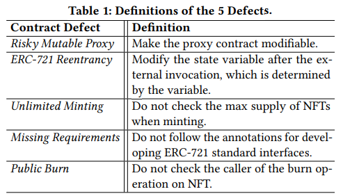
(1) 存在风险的可变代理：
OpenSea 是 NFT 生态系统中规模最大、最受欢迎的 NFT 交易市场。它采用 Wyvern 协议来促进 NFT 的去中心化交易。卖家首次在 OpenSea 上架其 NFT 时，代理注册合约会创建一个名为 OwnableDelegateProxy 的智能合约，用于存储卖家的地址。代理注册合约可以使用此新合约代表卖家执行操作并调用其他合约中的方法。当卖家在其 NFT 智能合约中上架任何商品时，他们都会授权代理注册合约转移其代币。因此，用户无需为每个 NFT 支付额外的 Gas 费用来获得额外的批准，从而简化了交易。然而，由于代理注册合约可以控制用户的所有代币并自行进行交易，因此如果代理注册地址可修改，则存在风险。在这种情况下，所有用户的代币都可以转移给攻击者，攻击者可以通过代理设置功能在未经许可的情况下更改代理注册表地址。
在图中，函数 setProxyRegistryAddress（第 1-2 行）允许外部用户（特别是合约所有者）修改代理地址。值得注意的是，即使是合约所有者，也可能恶意盗取用户的 NFT 并获取不正当利润。此过程可被利用，通过 isApprovedForAll 函数（第 3-7 行）批准其他地址，该函数返回 true 以允许其他地址操作用户的 NFT。代理地址的更改可能导致 NFT 的所有权从其所有者转移到攻击者手中。
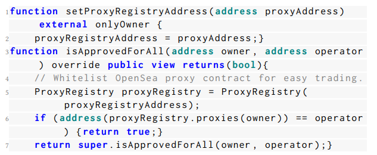
(2) ERC-721 可重入性：
与 fallback 函数和以太币转账相关的可重入模式不同，对特定函数的调用会导致 ERC-721 可重入性，而在此过程中不会发生以太币转账。ERC-721 标准强制使用 ERC721TokenReceiver 接口接收代币。值得注意的是，代币接收方可以在 ERC721TokenReceiver 中声明的 onERC721Received 函数中添加其他操作。因此，有人可以通过设计恶意的 onERC721Received 函数来攻击受害合约。例如，如果受害合约调用 safeTransferFrom 函数，该函数会调用接收方的 onERC721Received 函数来检查接收方是否为合约，则恶意接收方可以通过添加函数回调重新进入受害合约。合约的运行意图可能会被打断。大多数情况下，这种重入调用会导致铸造的 NFT 价格超过稀有度阈值，从而损害其他买家的利益。更糟糕的是，它还可能造成严重的经济损失。
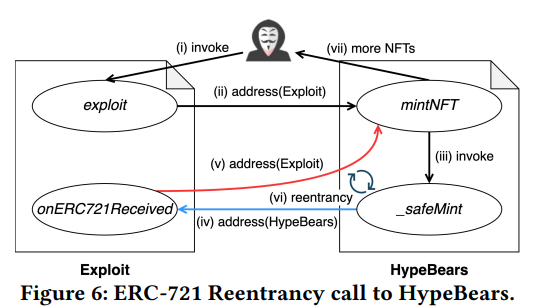
在图中，函数 mintNFT 调用了 OpenZeppelin 实现中的 _safeMint 函数（第 6 行）。_safeMint 函数调用了 IERC721Receiver.onERC721Received，接收方可以利用该函数执行重入调用。根据 Solidity 官方文档中介绍的合约继承和调用者机制，重入调用与调用 mintNFT 的原始调用者来自同一地址。因此，该函数的正常流程可能会被中断。addressMinted 的状态（第 7 行）无法设置为 true，这意味着调用者可以跳过 canMint 函数（第 3 行）中的检查，从而铸造超过阈值的代币 。
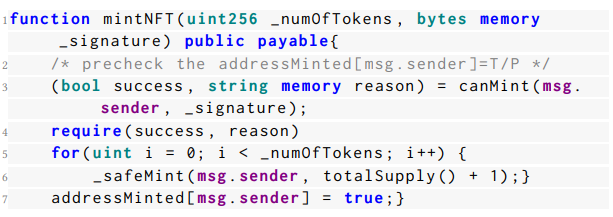
(3) 无限铸造：
有限供应是 NFT 生态系统维持数字稀缺性和控制数字资源丰富性的关键特征之一。智能合约可以通过设置链上稀缺性参数和检查禁止超出承诺限额的铸造逻辑来确保稀缺性，从而施加适当的限制。ERC721Enumerable 中的 totalSupply 函数可用于获取已铸造的 NFT 数量，并将其与项目的最大供应量（稀缺性参数）进行比较。许多 NFT 项目都包含储备功能，合约所有者可以出于某些原因（例如团队成员个人持有和未来使用等）保留部分 NFT 不进行公开销售。但是，假设储备功能中没有要求检查当前供应量是否超出承诺限额。当合约所有者试图造成损害或合约所有者的私钥被泄露时，攻击者可以实现无限铸造，无需付费即可获得更多 NFT，并威胁 NFT 的稀缺性。
图中，合约所有者通过 _safeMint 函数（第 5 行）预留了更多 NFT，该函数位于著名 BAYC NFT 项目的智能合约中。然而，不幸的是，由于对供应量的检查疏忽，NFT 的铸造数量可能不受限制。通过每批次铸造 30 个 NFT（第 4-5 行），铸造的 NFT 数量（供应量 + i）（第 5 行）可能会超过项目的最大供应量。因此，如果攻击者有权调用此函数并免费铸造无限量的 BAYC NFT，
那么 NFT 的数字稀缺性可能会受到威胁，项目将遭受巨大的经济损失。
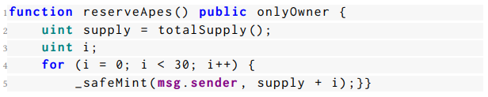
(4) 缺失要求：
ERC-721 标准为接口中的每个函数提供了注释，有助于确保与 NFT 相关的操作正确进行。开发者应该在 NFT 智能合约中实现这些要求。遗憾的是，如果没有进行要求检查，正确的逻辑可能会失效，并损害 NFT 所有者的利益。例如，如果没有对 approve 函数的函数调用者进行检查，任何人都可以成为操作员，从而获得对他人 NFT 进行操作的权限。
我们可以在图中的 approve 函数中发现这个缺陷。ERC-721 注释规定，除非函数调用者是当前 NFT 所有者或授权操作员（第 2 行），否则 approve 函数应该抛出异常。然而，这个有问题的 approve 函数（第 3-7 行）并没有检查函数调用者。在这种情况下，如果有人调用此函数，他们就可以成为 NFT 的操作员，并有权将其转移给自己，从而窃取他人的 NFT。
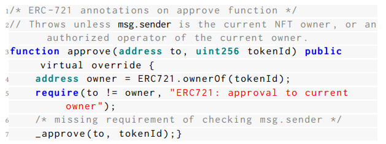
(5) 公开销毁：
销毁 NFT 通常是为了控制其价格。如果需求旺盛而供应有限，其价值可能会随之上涨。因此，许多项目采用销毁功能来实现供应控制。此外，NFT 销毁也用于其他场景，例如漏洞修复和游戏化。由于销毁的特性，确保只有 NFT 所有者才能访问销毁功能至关重要。如果任何人都可以调用销毁功能，未经许可销毁他人的 NFT，则项目可能会遭遇悲剧，所有 NFT 都可能蒸发。
图中显示，NFT 合约存在公开销毁缺陷。销毁函数使任何人都可以销毁他人的 NFT。delete 语句（第 8 行）断开了 NFT 与其所有者之间的所有权。然而，没有检查来判断销毁函数的调用者是否是 NFT 所有者，这意味着任何人都可以销毁他人的 NFT。
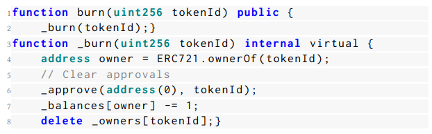
NFTGuard 缺陷检测工具
下图展示了 NFTGuard 方法的概览。作者设计的 NFTGuard 主要包含四个组件：输入器、特征检测器、控制流图 (CFG) 构建器和缺陷识别器。
具体来说，用户需要输入 Solidity 源代码。Solidity 编译器会编译合约代码，以获取字节码和抽象语法树 (AST) 以供进一步分析。具体来说，输入器从抽象语法树中提取源码映射，并利用一个槽位映射 (slot map) 来存储变量与其槽位 ID 之间的映射关系。合约字节码利用 Geth提供的 API 被反汇编为操作码。然后，NFTGuard 基于符号执行动态构建控制流图 (CFG)，并记录用于检测缺陷特征的关键事件（例如堆栈事件、内存事件和调用事件）。在符号执行过程中，特征检测器会检测三个特征（即映射存储、删除操作和外部调用）。对于每个缺陷，NFTGuard 会根据这三个特征和记录的事件设计特定的规则。最终，NFTGuard 根据规则将识别出的缺陷报告到缺陷标识符中。NFTGuard 结合从合约源代码和字节码中提取的关键信息来帮助检测缺陷。使用源代码信息的目的是为了在执行特定操作码时从源映射中获取状态变量和源代码的槽位 ID。这可以帮助在检测代码覆盖率较高的复杂 NFT 智能合约时更有效地定位缺陷代码并发现缺陷。具体而言，为了根据特定缺陷的特征查找和标记重要的状态变量，NFTGuard 通过分析抽象语法树 (AST) 静态获取状态变量的槽位 ID，并记录它们的名称和数据类型。这有助于 NFTGuard 在符号执行期间监控处理这些变量的操作码。通过与连接源代码和字节码的源映射协作，NFTGuard 可以在执行操作码时获取源代码信息。因此，NFTGuard 可以根据预先设计的特征检测模式报告合约缺陷，并重点关注特定操作。
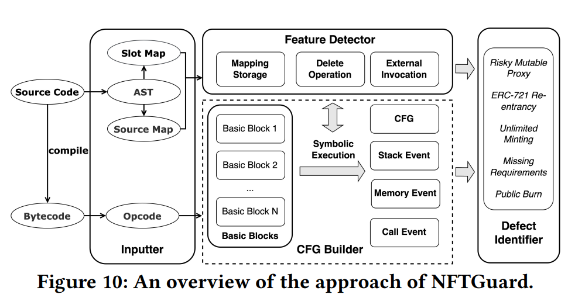
操作语义建模
在本小节中，将对构成作者检测方法中核心分析模块基础的几个基本指令、变量和函数的语法进行建模。首先给出一些与存储和内存相关的指令的操作语义，如下所示：
指令：- 𝑆𝑆𝑇𝑂𝑅𝐸(𝑦, 𝑧) 将值𝑦写入存储地址𝑧；
| 𝑆𝐿𝑂𝐴𝐷(𝑦, 𝑧) 从存储地址𝑧加载值𝑦；
| 𝑀𝑆𝑇𝑂𝑅𝐸(𝑦, 𝑧) 将值𝑦存储到内存地址𝑧；
| 𝑀𝐿𝑂𝐴𝐷(𝑦, 𝑧) 从内存地址 𝑧 加载值 𝑦；
| 𝐶𝐴𝐿𝐿(𝑡, 𝑜,𝑙) 调用目标函数 𝑡，并将参数从内存地址 𝑜 开始加载，参数长度为 𝑙。
在符号执行过程中，一些关键数据结构会根据 EVM 指令的语法进行更新。具体来说，𝑆 表示操作数堆栈，𝑀 表示模拟的临时内存空间，𝐺𝑆 表示状态变量的存储值，在路径探索过程中，可满足性模理论 (SMT) 求解器中累积的约束被定义为变量 𝑐𝑜𝑛𝑠。如概览所述，论文的方法利用源代码级信息来帮助在符号执行之前和期间查找缺陷代码。
具体来说，通过分析 AST 信息，首先获取状态变量的槽 ID 及其数据类型。然后，我们创建一个槽图，以便标记状态变量及其槽 ID，以便分析特定的缺陷。接下来，我们使用关键字匹配策略 𝛿，根据槽映射中关键字 𝑘（例如 𝑜𝑤𝑛𝑒𝑟）的名称，将关键变量及其槽 ID 提取到集合 𝐼𝑘 中。为了利用槽 ID 信息，我们定义了函数 𝑒 和 𝑖，用于在从字节码级别跟踪路径时推断与状态变量相关的操作。
具体来说，SMT 求解器会累积符号执行框架生成的约束并更新 𝑐𝑜𝑛𝑠。为了获取决定条件的状态变量，我们定义了一个函数 𝑒，用于将 𝑐𝑜𝑛𝑠 中包含的存储地址提取到一个集合中。此外，函数𝑖用于根据提取出的集合中与读或写相关的地址推断插槽ID。例如，假设𝑓 𝑜𝑜是一个状态变量，其值类型为𝑢𝑖𝑛𝑡，槽位 ID 为 0。判断𝑖 𝑓 (𝑓 𝑜𝑜 > 10) 的跳转条件是𝐼 𝑓 (𝐼𝑆𝑍𝐸𝑅𝑂(𝐺𝑇 (10, 𝐼𝑎_0)) 累积在𝑐𝑜𝑛𝑠中，𝐼𝑎_0 表示槽位 ID 为 0 的状态变量的存储地址。函数𝑒可用于从𝑐𝑜𝑛𝑠中提取存储地址𝐼𝑎_0，函数𝑖 可以从 𝐼𝑎_0 推断出 slot ID 0。需要注意的是，由于使用了哈希函数（例如 𝐾𝐸𝐶𝐶𝐴𝐾256），映射类型状态变量的推断更加复杂。
源映射还有助于在执行过程中查找函数级上下文。作者使用“上下文”一词来表示函数中源代码生成的指令。在执行函数生成的操作码时，可以从源映射中获取函数名称和对应的源代码。作者使用𝐶𝑜𝑛𝑡𝑒𝑥𝑡(𝑓)来表示执行特定操作码时的函数级上下文𝑓。
操作特征识别
基于指令级语义建模，我们提出了三个操作的操作特征，即映射存储、
删除操作和外部调用。每个操作都包含一系列指令。在符号执行过程中，这三个操作反映在操作码序列中，可用于检测缺陷。
a.映射存储。映射变量的存储包含一些关键操作。以 _owners[id] = to 为例：
(1) 指令 𝑀𝑆𝑇𝑂𝑅𝐸(𝑖𝑑, 0) 和 𝑀𝑆𝑇𝑂𝑅𝐸(𝑠, 32) 分别将值 𝑖𝑑 和变量 _owners（视为 𝑠）的槽位 ID 存储到内存地址 0 和 32。
(2) 然后，𝐾𝐸𝐶𝐶𝐴𝐾256 指令从内存空间 0 到 64 加载数据，并将计算出的哈希值 𝑥 推送到堆栈顶部。具体来说，此哈希值表示由 𝑘𝑒𝑐𝑐𝑎𝑘 (ℎ(𝑘) · 𝑝) 计算的变量 _owners 的存储区域，其中 𝑝 表示槽 ID，𝑘 表示映射的键——𝑖𝑑，· 表示连接，ℎ 是根据键的类型应用于键的函数。
(3) 最后，这个计算出的哈希值𝑥被用作函数𝑆𝑆𝑇𝑂𝑅𝐸存储值𝑡𝑜的存储地址。
在原文的方法中，此特性有助于定位映射变量的存储操作，并验证函数的执行上下文。具体来说，假设执行操作码𝐽𝑈𝑀𝑃时，其对应的源代码是函数_mint，我们可以知道符号执行将在函数_mint的上下文中执行操作码。由于标准mint函数实现了将地址（代币所有者）存储到映射变量的键（代币ID）的功能，因此，在跟踪函数上下文中的指令时，可以应用识别映射存储的规则。
具体来说，由于在符号执行之前已知𝐼𝑜𝑤𝑛𝑒𝑟，就可以通过识别其槽位 ID 来获取对状态变量 _owners 的操作。结合源映射信息和对目标状态变量的操作，
可以推断出所实现的函数是一个真正的_mint，并且𝐶𝑜𝑛𝑡𝑒𝑥𝑡(𝑚𝑖𝑛𝑡) 已得到验证。
b.删除操作。在作者的检测方法中，删除操作是销毁代币的重要标志。其操作码序列所反映的特征与映射状态变量的存储类似。然而，不同之处在于，存储的值是变量类型的默认值。以删除 bar为例，bar 是一个 𝑚𝑎𝑝𝑝𝑖𝑛𝑔(𝑢𝑖𝑛𝑡 => 𝑢𝑖𝑛𝑡) 类型的变量。首先，通过哈希函数 𝐾𝐸𝐶𝐶𝐴𝐾256 计算 bar的存储区域
𝑘𝑒𝑐𝑐𝑎𝑘 ( (ℎ(1) · 𝑝)。然后，在删除操作中，𝑆𝑆𝑇𝑂𝑅𝐸 将一个类型为 𝑢𝑖𝑛𝑡 的默认值存储在存储地址中。
c.外部调用。在 Solidity 中，调用操作相对复杂。执行 𝐶𝐴𝐿𝐿 时，堆栈会弹出 7 个元素。它声明了消耗的 gas、目标地址、要转移的 ether 数量、要传递的参数（来自内存）以及用于存储返回数据的内存空间。原型可重入性（例如DAO 重入攻击）备受关注，它与以太币的转移数量有关。然而，外部函数的调用有所不同。被调用的函数选择器存储在 𝐶𝐴𝐿𝐿 从堆栈加载的内存空间中。具体来说，根据弹出元素的第四个元素读取的内存值会告诉 EVM 在执行期间应该调用哪个函数。函数的外部调用特性有助于 NFTGuard 发现 onERC721Received 的存在，这对于检测 ERC-721 重入缺陷至关重要。
缺陷检测
为了检测 NFT 智能合约中的 5 个缺陷，NFTGuard 使用符号执行框架来探索合约路径。预定义模型有助于识别执行状态，从而捕捉关键特征并发现缺陷。以下段落将详细说明如何在 NFT 智能合约中查找缺陷。
(1) Risky Mutable Proxy。
Risk Mutable Proxy 缺陷可以通过修改存储代理地址的状态变量的代理方法来识别。因此，如果合约中存在一个代理地址设置函数需要暴露给用户，则该合约存在此类缺陷。
作者将此规则定义如下。其中，𝑥 表示用户生成的外部参数，𝐼𝑝𝑟𝑜𝑥 𝑦 表示通过 𝛿 匹配的变量的 slot ID，其中 𝛿 包含关键字 proxy。当𝑥存储到
地址𝑡，并且𝑖(𝑒)从地址𝑡推断出的插槽ID在集合𝐼𝑝𝑟𝑜𝑥𝑦中时，NFTGuard 将报告该缺陷。
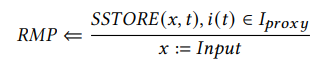
(2) ERC-721 可重入性。
与内存相关的操作码专注于在“safe”方法（例如包含外部函数调用的 _safeMint 和 safeTransferFrom）中查找可重入性。
具体来说，作者使用以下表达式来演示识别可重入的核心思想。执行指令 𝐶𝐴𝐿𝐿 时，将堆栈 𝑦 中的第四个元素（由 𝑀𝐿𝑂𝐴𝐷 从内存地址 𝑠 加载）从内存加载的参数与 onERC721Received 函数选择器左移的值 ℎ′（由指令 𝑆𝐻𝐿 执行）进行比较，而 ℎ′由 𝑀𝑆𝑇𝑂𝑅𝐸 存储在相同的内存地址 𝑠 中。 𝑦 获得的调用目标应等于ℎ′才能调用 onERC721Received。然后，识别从路径条件中提取的槽位ID，以识别𝑒 的存储地址。接下来，将约束提供给 SMT 求解器，并检查以下断言的满足情况：状态变量未被修改以改变阻碍重入的状态。
当 𝑇 中的存储地址所表示的每个变量始终等于原始值 𝐺𝑆 (𝑡) 时，即发生 ERC-721 重入。
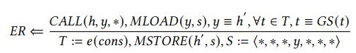
(3) 无限铸币。
已实现的函数 totalSupply 返回已铸有效代币的长度，并可用于检查铸币的可行性。如果没有约束来检查 NFT 的总供应量和当前铸币数量，则该合约被认为包含此类缺陷。
在下面的表达式中，𝐶𝑜𝑛𝑡𝑒𝑥𝑡(𝑚𝑖𝑛𝑡) 表示从源映射获取的函数上下文，𝑒 利用存储在符号执行状态中的路径条件查找相关的状态变量。通过查找存储 NFT 所有权的变量（即 𝑆𝑆𝑇𝑂𝑅𝐸(∗, 𝑡)）的映射存储，验证了 mint 函数的运行，发现从 𝛿 获得的 𝐼𝑠𝑢𝑝𝑝𝑙 𝑦 中不存在 slot ID，并且函数 𝑖 代表无限铸币，这意味着无需检查供应量。
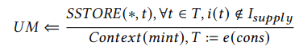
(4) 缺失需求。
查找缺失需求缺陷的核心思想是找到执行检查的关键位置，以及使用 SMT 求解器检查该位置的需求满足情况。
具体来说，对于 𝑎𝑝𝑝𝑟𝑜𝑣𝑒 函数，关键位置是将已批准的地址存储到映射状态变量的操作特征，其键为已批准的代币 ID。然后，将正确要求的否定条件输入到 SMT 求解器，并检查以非预期方式执行映射存储的可行性。
以下表达式展示了作者对缺失要求的检测逻辑。对于 ERC-721 函数 𝑓 ，强制要求用集合 𝐸(𝑓 ) 表示，其中 𝐸𝑓𝑚 表示其中一项要求𝑚。如果𝐸(𝑓 ) 中的任何一个否定条件，例如 ¬𝐸𝑓𝑚，根据 SMT 求解器可行，则该合约被认为
存在缺失要求缺陷。
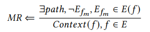
(5) 公开销毁。
为了检测公开销毁缺陷，首先应该定位销毁 NFT 中的删除操作。根据作者定义的操作特征，当识别到删除操作时，
NFTGuard会执行数据依赖性检查。如果调用者的地址不是决定性变量之一，则 NFT 合约存在公开销毁缺陷，从而漏掉了调用者地址的检查。
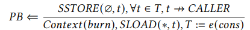
上述表达式表示此类缺陷的特征。首先，从源映射中识别出函数上下文为𝑏𝑢𝑟𝑛；然后，执行上一节介绍的删除特征检测。具体来说，作者使用∅
表示默认值，用于擦除地址𝑡上的原始值，该值由𝑆𝐿𝑂𝐴𝐷(∗, 𝑡) 获得。如果在路径条件下不存在由指令𝐶𝐴𝐿𝐿𝐸𝑅获得的确定变量（例如𝑚𝑠𝑔.𝑠𝑒𝑛𝑑𝑒𝑟），则为公开销毁。